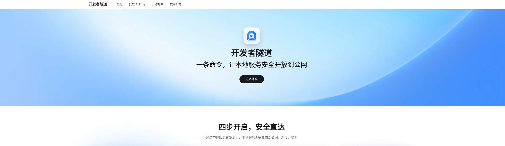
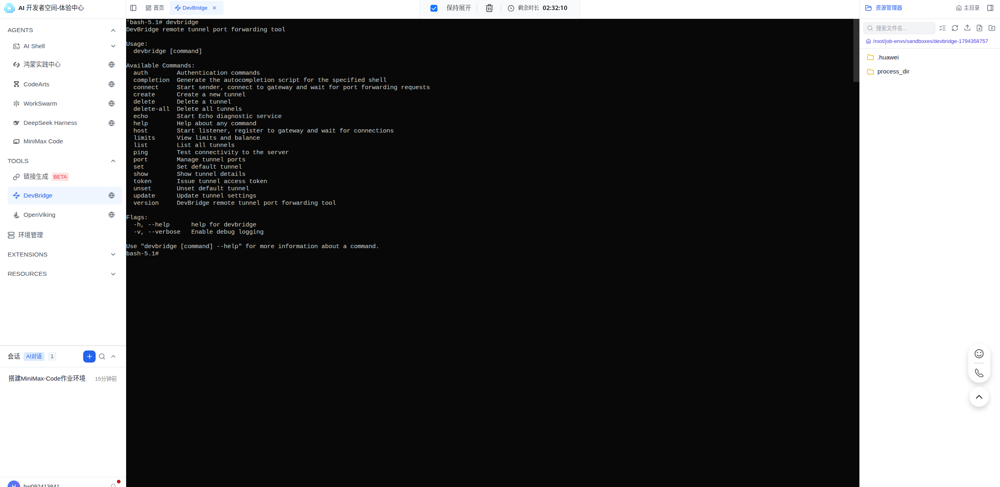
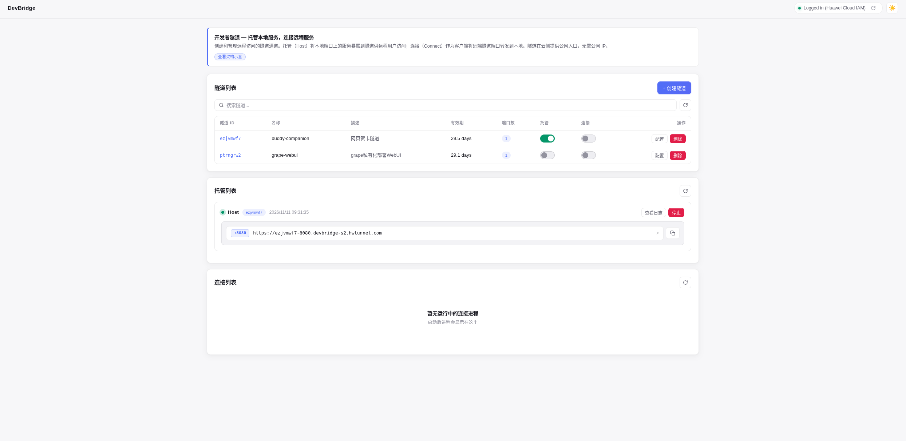
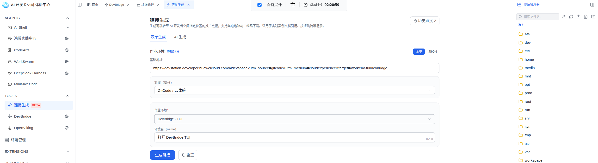
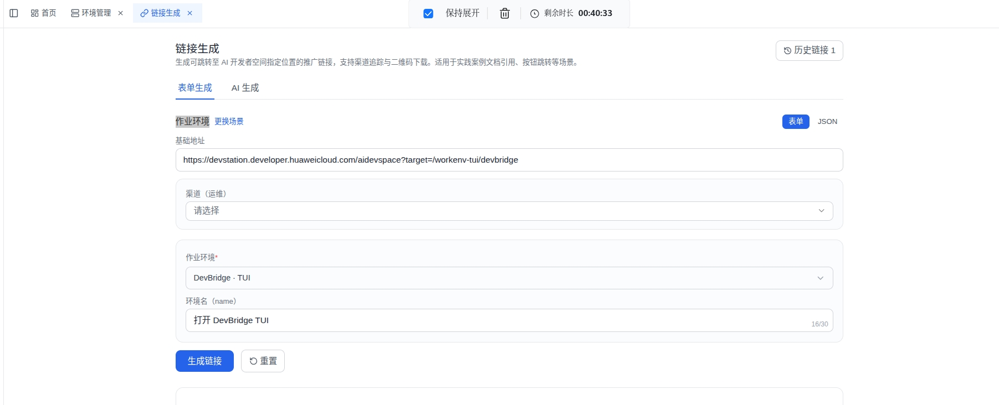
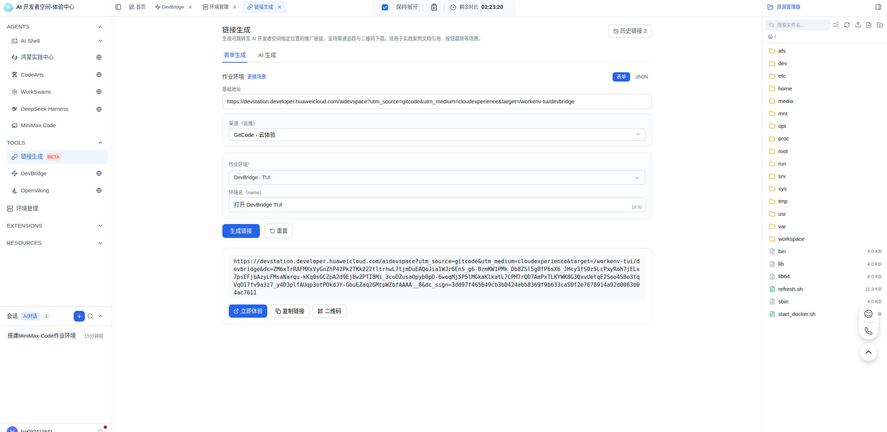
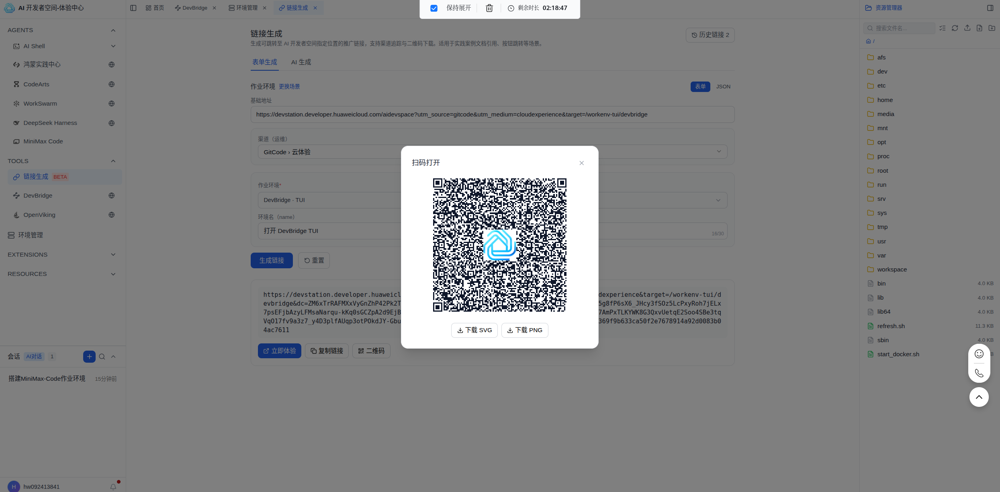

用一条链接直达 DevBridge TUI
DevBridge 的价值点在一个很具体的动作：创建隧道，拿到公网地址。但以前把它交给人试用，往往要先解释平台入口、菜单和环境。现在可以改成一条作业环境深链——点开、登录、落地就是 DevBridge TUI，用户直接进入创建隧道的现场。
适合人群：运营、支持、想把 DevBridge 放进文档或工单的人 预计时间：10 分钟 前置条件：华为云账号（已注册即可）
一先认识 DevBridge
DevBridge 是 AI 开发者空间里的一个作业环境，底层能力来自开发者隧道。它的界面不是网页表单，而是 TUI：进去就是命令行，创建隧道、拿公网地址都在里面完成。
支持文档或工单里的入口需要满足一个条件：读者点开后不用再猜去哪里。我把这条链接的目标定成三件事：
- 从链接点进去，不经过任何配置界面；
- 落地就是 DevBridge TUI，命令行可直接输入；
- 用户第一件事是创建隧道，而不是先找入口。
文章先走一遍点开后的使用路径，再回到「链接生成」界面，看这条链接是怎么配置的。

二以前的做法：给个入口，剩下自己来
如果只给一条 DevBridge 空间页或 AI 开发者空间首页链接，读者点开后面对的是通用工作台。DevBridge 不一定在显眼位置，用哪个菜单、进哪个环境、打开后能做什么，都要自己判断。
这些步骤对熟悉平台的人不算难，但文档和工单里最怕这种前置学习。读者本来只想开条隧道，却要先在平台里找回上下文。
三URL 即环境带来的变化：从找入口到进现场
「链接生成」产出的作业环境链接不是导航入口。它把目标环境、环境名和渠道一起编进 URL，落地时由开发者空间恢复到指定 TUI。这类链接叫 URL 即环境（URL to ENV）。
对读者来说，点击前就能从环境名知道会发生什么；打开后也不需要再做一层选择：
| 环节 | 没有深链 | 有深链 |
|---|---|---|
| 进入时要做的判断 | 选菜单、选环境 | 没有，链接已经替你选好 |
| 要理解的界面 | 平台结构、环境管理 | 只需要知道 TUI 里能做什么 |
| 点击前的预期 | 不知道打开后是什么 | 环境名写着「打开 DevBridge TUI」 |
| 来源追踪 | 无法区分链接来自哪个文档 | 渠道参数统一记录投放来源 |
| 卡住时 | 不知道自己走没走对 | 落地不对一眼能看出来 |
四开始前要确认的几件事
- 华为云账号：已注册即可，不需要充值。
- 能打开 DevBridge 空间：devstation.connect.huaweicloud.com/space/devbridge。
- AI Shell 左侧栏能看到 TOOLS → 链接生成（BETA）：做链接时需要。看不到说明当前账号没在开放名单里，需要找管理员开通。
五动手体验：点一次这条链接
还没登录过开发者空间的话，会先跳登录，登录完自动回到这条链接。
1打开链接
本案例链接由「作业环境」场景生成，target 指向 /workenv-tui/devbridge。按钮或二维码都可以作为入口。
2落地 DevBridge TUI
环境配置完成后直接进入 TUI，不是工作台首页。终端就位，可以直接输入命令。

看到 DevBridge TUI 命令行，可以直接输入。
3在 TUI 里创建隧道
按 TUI 引导输入 devbridge create，拿到公网地址。到这里才算完成闭环：环境直达只解决了“去哪里”，真正有价值的输出是这条可访问的公网 URL。

拿到可访问的公网地址。
六给自己要分享的场景做一条这样的链接
从开发者空间的 AI Shell 打开左侧栏 TOOLS → 链接生成（BETA）。三种场景对应三种落地方式：
| 场景 | 落地效果 | 用在哪 |
|---|---|---|
| AI Shell 预置提示词 | 打开 AI Shell，把写好的提示词填进去，默认不自动发送 | 进去就能照着问 |
| 作业环境 | 打开指定作业环境的命令行或网页界面 | 本案例走这条 |
| 自定义 | 进容器前先跑几条命令，再开端口或预置提示词 | 需要先把服务拉起来 |
1选「作业环境」场景，选 DevBridge · TUI
下拉列表支持按名字搜索，选中后环境名自动带出。基础地址会自动填好，不用改。

2环境名写动作型，渠道按规范
环境名会显示给最终用户，上限 30 个字符。写成动作型命名，用户点之前就知道会发生什么：
打开 DevBridge TUI
体验开发者隧道
创建公网访问连接同一个入口被多个文档复用时，渠道不要每次随手填写，提前定规范：
| 渠道名 | 用途 |
|---|---|
case-doc |
案例文档 |
training |
培训或课程 |
support |
支持工单 |
product-doc |
产品文档 |
demo |
现场演示 |

基础地址、作业环境、环境名、渠道四项填写完整，环境名是动作型表述。
3生成链接，看链接结构
结果区给出完整链接，下面依次是立即体验、复制链接、二维码三个按钮。

链接里有三个字段要注意：target=/workenv-tui/devbridge 决定落点，dc 带着环境与渠道信息，dc_sign
做签名校验。复制时不要截断，聊天工具常把长链接折成省略号。
点「立即体验」能落到 DevBridge TUI；复制出来的链接发给同事也能用。
4生成二维码
弹窗支持下载 SVG / PNG，放进文档或线下材料。

二维码弹窗可正常打开，下载的图片可独立扫码。
发布前至少做三种冷启动验证：当前已登录状态直开、新会话登录后直达、手机扫码落地。三种入口都落到 DevBridge TUI，再对外发。
七用之前要知道的几件事
- 环境是临时的：体验版顶栏一直显示剩余时长，到点销毁。要留的东西，用户得自己先存出去。
- 链接有效，不等于环境一直在：链接本身长期可用，每次点开都是新容器，隧道要重新创建。
- 链接不带登录态：没登录会先跳华为云登录，登录完自动回到这条链接。
- 环境名上限 30 字：超了会被截断，别把使用说明塞进环境名。
- 渠道只做统计：链接里只保留环境定位和渠道信息，不放敏感信息。
八常见问题
| 现象 | 原因 | 处理 |
|---|---|---|
| 落在通用工作台 | 这条是普通链接，不是深链 | 用带 target=/workenv-tui/devbridge 的链接 |
| 打开的不是 TUI | 场景或作业环境选错 | 回链接生成页检查作业环境是否为 DevBridge · TUI |
| 生成的链接打不开 | 链接被截断，缺 dc 或 dc_sign |
重新完整复制 |
| 二维码扫不出来 | 截图或压缩导致码点丢失 | 下载原始 PNG 再投放 |
| 环境名被截断 | 超过 30 个字符 | 缩短为动作型短语 |
| 隧道创建失败 | 本地服务未启动或端口占用 | 看 TUI 输出，确认服务状态后重试 |
九相关资源
- DevBridge 空间：devstation.connect.huaweicloud.com/space/devbridge
- AI 开发者空间体验版：devstation.developer.huaweicloud.com/aidevspace
- 链接生成入口：AI 开发者空间 → TOOLS → 链接生成 → 作业环境